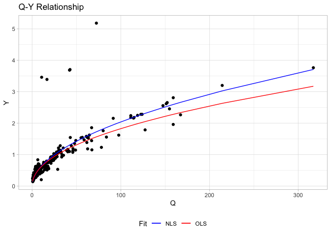
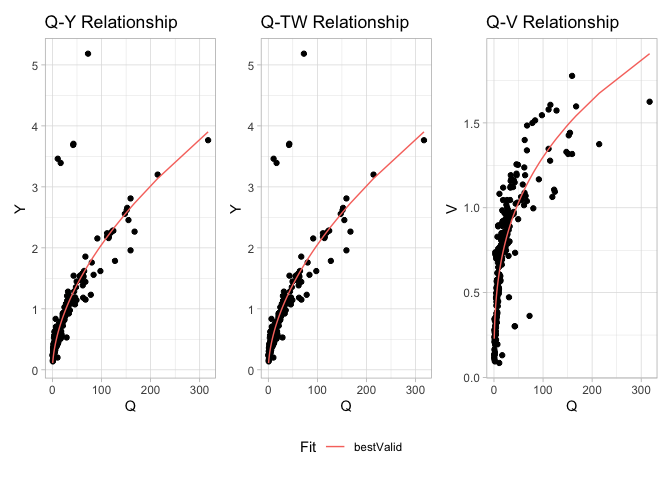

Citation: Johnson, J.M. (2022) AHGestimation: Tools for Estimating Physically-Based, Computationally Efficient Feature Based Hydraulic Geometry and Rating Curves.
Using data from the USGS manual measurement (Johnson, 2018), we can illustrate the utilities in this package. Overall this package provides 4 capabilities:
- Single Relation fits
- Full hydraulic system fits
- Data preprocessing
- Derivation of cross sections and additional hydraulic traits
Single Relationship fits
Here we use the AHGestimation package to fit the Q-Y relationship using OLS and NLS models:
(sf = ahg_estimate(df = select(data, Q, Y), allowance = .05))
#> type exp coef nrmse pb method
#> 1 Y 0.5185496 0.1871979 8.35 -0.18 nls
#> 2 Y 0.4797009 0.2004177 8.58 -6.19 ols
Overall the the NLS model provides a better fit (albeit small) when measured both by nRMSE and pBais.
Full Hydraulic fits
When we have data regarding three hydraulic states (V,TW,Y) we can ensure that the solutions found are physically valid (meets the continuity constraint Q = Y x V x TW).
In this mode the OLS and NLS models are fit, and if continuity is not met, then a Evolutionary Approach is implemented. Doing so produces three unique fits for three variables (27 total combinations). These are crossed to identify the best performing relationships that meet continuity at a prescribed allowance:
(x = ahg_estimate(data, allowance = .05))
#> V_method TW_method Y_method viable tot_error V_error TW_error Y_error
#> 1 nsga2 nls nsga2 TRUE 0.8363382 0.2415419 0.1708646 0.4239317
#> 2 nsga2 nsga2 nsga2 TRUE 0.8363637 0.2415419 0.1708902 0.4239317
#> 3 ols ols ols TRUE 0.8686964 0.2641997 0.1715093 0.4329873
#> 4 nls nls nls FALSE 0.8336534 0.2412345 0.1708646 0.4215543
#> V_coef TW_coef Y_coef V_exp TW_exp Y_exp condition
#> 1 0.2803454 23.30572 0.1577947 0.3329645 0.1111103 0.5570045 bestValid
#> 2 0.2803454 23.31637 0.1577947 0.3329645 0.1100569 0.5570045 nsga2
#> 3 0.2155711 23.01003 0.2004177 0.4093273 0.1104173 0.4797009 ols
#> 4 0.2886315 23.30572 0.1871979 0.3273010 0.1111103 0.5185496 nlsOverall an combination of the OLS and NLS fit are able to provide a error minimizing solution:

In the above example we see that NLS was able to provide better fits the OLS but neither NLS or OLS was able to provide physically valid solutions (viable). While the nsga2 approach was able to provide a physically valid solution, its error was almost 10% higher then the OLS/NLS methods.
However a combined approach of a NLS, OLS, and nsga2 was able to provide a physically valid result with only 0.03% more error the seen in the best performing NLS method.
** This was all done using raw, unrefined data! **
Data Filtering
Due to the volatility of river systems and deviations in measurement techniques and accuracy hydraulic data is often very noisy. While the ahg_estimation tool is intended to reduce this noise and produce a mass-conserving hydraulic fit, it is also possible to filter the data prior to fitting. The range of data filtering options provided are documented in the data-filtering vignette and an example is provided below:
(xf = data %>%
# Keep the most recent 10 year
date_filter(year = 10, keep_max = TRUE) %>%
# Keep data within 3 Median absolute deviations (log residuals)
mad_filter() %>%
# Keep data that respects the Q = vA criteria w/in allowance
qva_filter() %>%
ahg_estimate())
#> V_method TW_method Y_method viable tot_error V_error TW_error Y_error
#> 1 nls nls nls TRUE 0.3868315 0.1737420 0.1235461 0.08954336
#> 2 nls nls nls TRUE 0.3868315 0.1737420 0.1235461 0.08954336
#> 3 ols ols ols TRUE 0.4869776 0.2216127 0.1255148 0.13985007
#> V_coef TW_coef Y_coef V_exp TW_exp Y_exp condition
#> 1 0.2938667 17.98606 0.1934940 0.3009787 0.1874598 0.5098970 bestValid
#> 2 0.2938667 17.98606 0.1934940 0.3009787 0.1874598 0.5098970 nls
#> 3 0.2204190 18.53150 0.2448765 0.3941493 0.1733737 0.4322574 olsWhen the data is effectively filtered we see NLS can provide an error minimizing, valid solution for the system that is quite different then the full data fit:

Hydraulic Estimation
Lastly, a range of functions have been added to extend the AHG parameters into cross section hydraulics and geometry:
filter_data = data %>%
date_filter(10, keep_max = TRUE) %>%
nls_filter(allowance = .5)
ahg_fit = ahg_estimate(filter_data)[1,]
(shape = compute_hydraulic_params(ahg_fit))
#> r p d R bd fd md
#> 1 2.749318 0.6103574 5.427385 1.363727 0.1842508 0.5065641 0.3091851
cs = cross_section(r = shape$r,
TW = max(filter_data$TW),
Ymax = max(filter_data$Y))
glimpse(cs)
#> Rows: 50
#> Columns: 4
#> $ ind <int> 1, 2, 3, 4, 5, 6, 7, 8, 9, 10, 11, 12, 13, 14, 15, 16, 17, 18, 19,…
#> $ x <dbl> 0.000000, 1.040816, 2.081633, 3.122449, 4.163265, 5.204082, 6.2448…
#> $ Y <dbl> 3.5656665613, 3.1871221498, 2.8351885546, 2.5090304653, 2.20780341…
#> $ A <dbl> 1.318953e+02, 1.130112e+02, 9.618829e+01, 8.127753e+01, 6.813466e+…
History
The development of this package began as a graduate school project between friends at UC Santa Barbara and UMass Amherst following the 2017 NOAA OWP Summer Institute and clear evidence channel shape may be a limiting factor in National Water Model Performance. It has since evolved to provide an open source utility for robust large scale data synthesis and evaluation. Funding from the National Science Foundation (Grants 1937099, 2033607) provided time to draft the preprint here and apply an early version of this software to the Continental Flood Inundation Mapping (CFIM) synthetic rating curve dataset. Funding from the National Oceanic and Atmospheric Administration’s Office of Water Prediction supported the addition of data filtering and hydraulic estimation, improved documentation, and code hardening. We are grateful to all involved.